Introduction
Social media has become a ubiquitous platform where individuals often express personal struggles, including those related to mental health. Detecting suicidal ideation in such texts can be paramount for early intervention.Advancements in NLP and machine learning present a unique opportunity to identify patterns that signal distress.
The purpose of this project is to develop a sophisticated suicide risk assessment tool using natural language processing techniques, with the aim of providing proactive support and intervention for individuals in distress, ultimately reducing the incidence of suicide and promoting mental well-being in our communities.
Data Preprocessing
-
Text Preprocessing
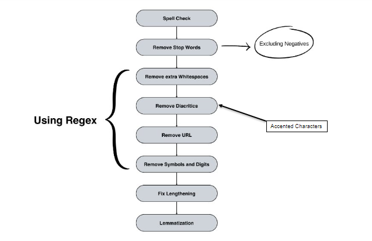 Pneumonia diagnosis can be challenging, particularly in cases where symptoms overlap with other respiratory conditions. By training a deep learning model on medical images, the project seeks to enhance diagnostic accuracy by automating the process of identifying pneumonia-related abnormalities in the lungs.
-
Word Embedding (Word2Vec)
Word2Vec is a powerful technique in the field of natural language processing (NLP) that has revolutionized the way we represent and understand textual data. At its core, Word2Vec aims to transform words into dense vector representations, or embeddings, in a continuous vector space. This method captures semantic relationships between words by learning from the distributional patterns of words in large text corpora. One of the key innovations of Word2Vec is its ability to preserve the semantic meaning of words through vector arithmetic. Words with similar meanings tend to have similar vector representations, enabling operations like vector addition and subtraction to produce meaningful results, such as analogies or semantic associations
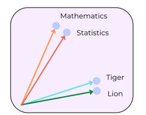 Word2Vec stands as a cornerstone in natural language processing, epitomizing the transformation of words into dense vector representations within a continuous vector space. This methodological marvel enables the encapsulation of semantic relationships between words, facilitating the capturing of synonymous terms and contextual nuances.
Models
-
Logistic Regression
Logistic regression serves as a fitting choice for analyzing datasets where one or more independent variables influence a dichotomous outcome. This statistical technique provides a robust framework for understanding the relationship between predictor variables and the binary outcome variable. With its ability to estimate the probability of a particular outcome occurring, logistic regression acts as a foundational model against which subsequent models can be benchmarked.
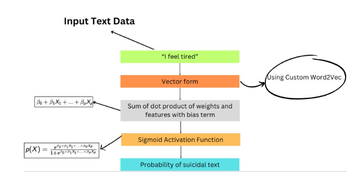 Results
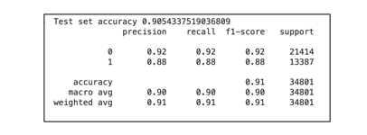 -
CNN
In the realm of image processing, convolutional neural networks (CNNs) stand at the forefront, adept at capturing spatial hierarchies and identifying salient features within images. However, it's worth noting that CNNs are not confined to image analysis alone; they have also found application in natural language processing (NLP), where they excel at tasks such as text classification, sentiment analysis, and language modeling.
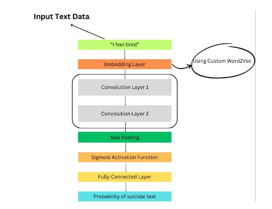 Results
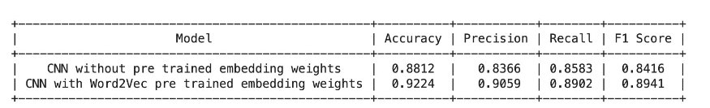 -
LSTM
In the context of NLP, LSTM networks have emerged as a cornerstone in various applications, including language modeling, machine translation, and sentiment analysis. Their innate capacity to model long-range dependencies and contextual nuances within textual sequences allows them to grasp the subtle nuances of language and extract meaningful semantic representations from unstructured text data. Moreover, LSTMs excel in handling variable-length sequences, accommodating the inherent flexibility and complexity of natural language.
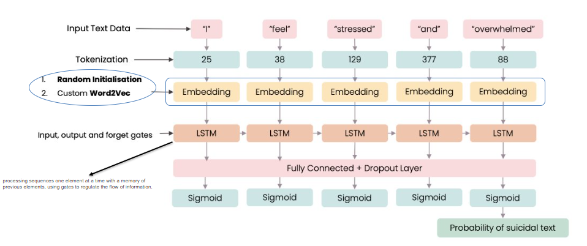 Results
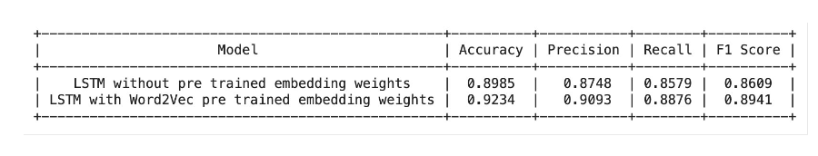 -
BERT
Bidirectional Encoder Representations from Transformers (BERT) stands as a groundbreaking innovation in the realm of natural language processing (NLP), revolutionizing the way we approach language understanding and semantic comprehension tasks.
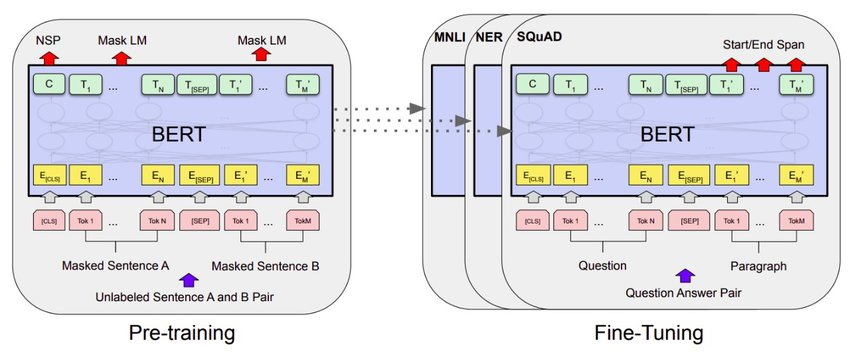 Unlike traditional language models that process text sequentially, BERT employs a novel approach known as masked language modeling, where it predicts missing words within a sentence based on the surrounding context. This bidirectional modeling strategy allows BERT to grasp intricate semantic relationships and contextual nuances within textual sequences, yielding profound insights into the underlying meaning and intent.
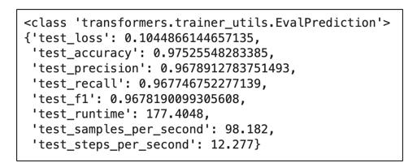 -
ELECTRA
ELECTRA, an innovative model in the realm of natural language processing (NLP), introduces a novel approach to pre-training transformer-based language models. Unlike traditional masked language models like BERT, which predict missing words within a sentence, ELECTRA employs a discriminator-generator architecture, where it replaces a subset of input tokens with plausible alternatives and trains a discriminator to distinguish between the replaced tokens and the original ones generated by a generator.
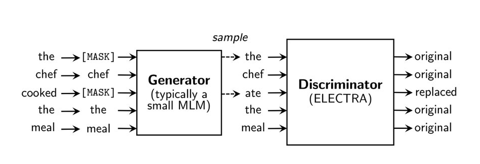 This adversarial training scheme enables ELECTRA to learn more efficiently from the entire input text, resulting in representations that capture deeper contextual understanding and semantic nuances. By focusing on the efficient use of computational resources and maximizing the amount of pre-training signal, ELECTRA achieves state-of-the-art performance on various downstream NLP tasks, including text classification, sentiment analysis, and question answering, solidifying its position as a pioneering model in the field of language understanding and representation learning.
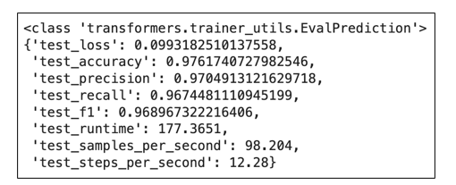
Results
After training the model for the specified number of epochs, the following results were obtained:
Conclusion
Utilizing a diverse array of NLP techniques, this study aimed to identify suicidal ideation within social media (Reddit) posts with exceptional accuracy. Models including Logistic Regression, CNN, LSTM, BERT, and ELECTRA were employed and rigorously compared. Results highlighted the transformative efficacy of transformer-based models, emphasizing their potential for real-world applications, particularly in facilitating timely and sensitive interventions for at-risk individuals.